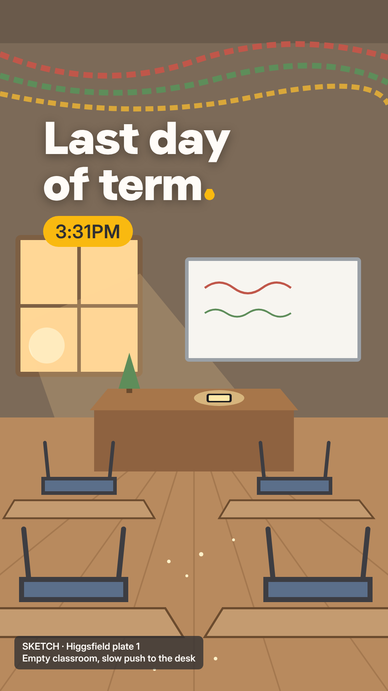
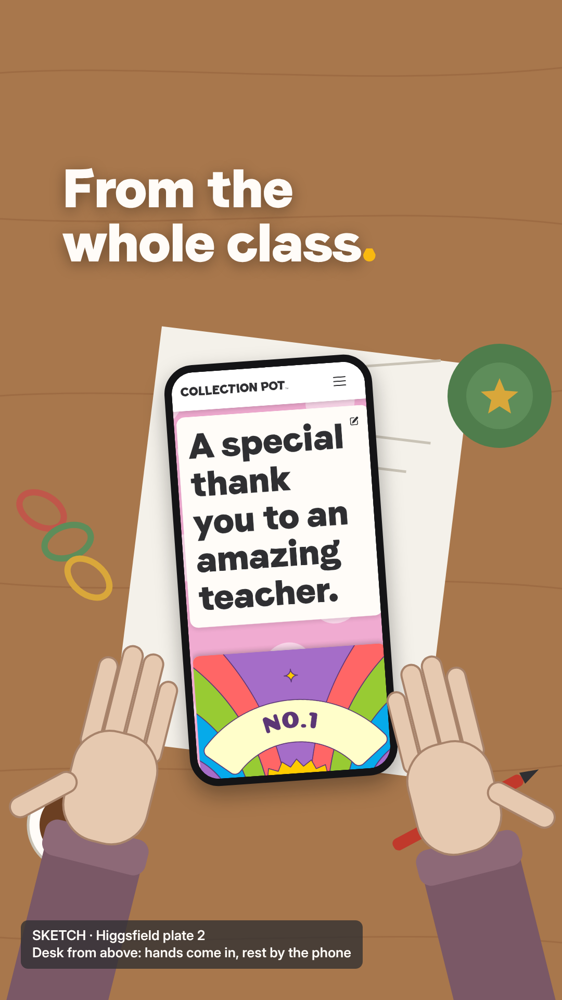
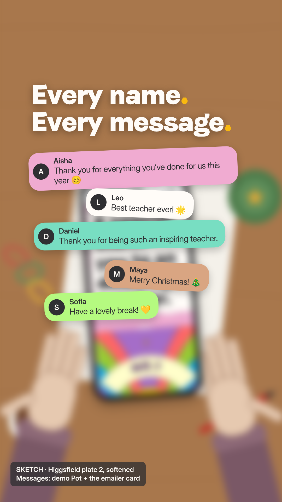
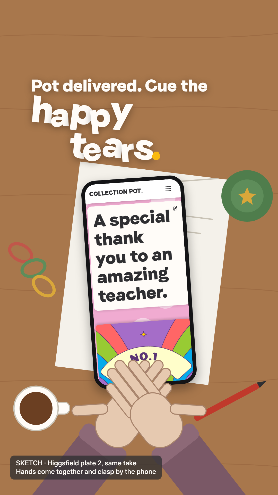
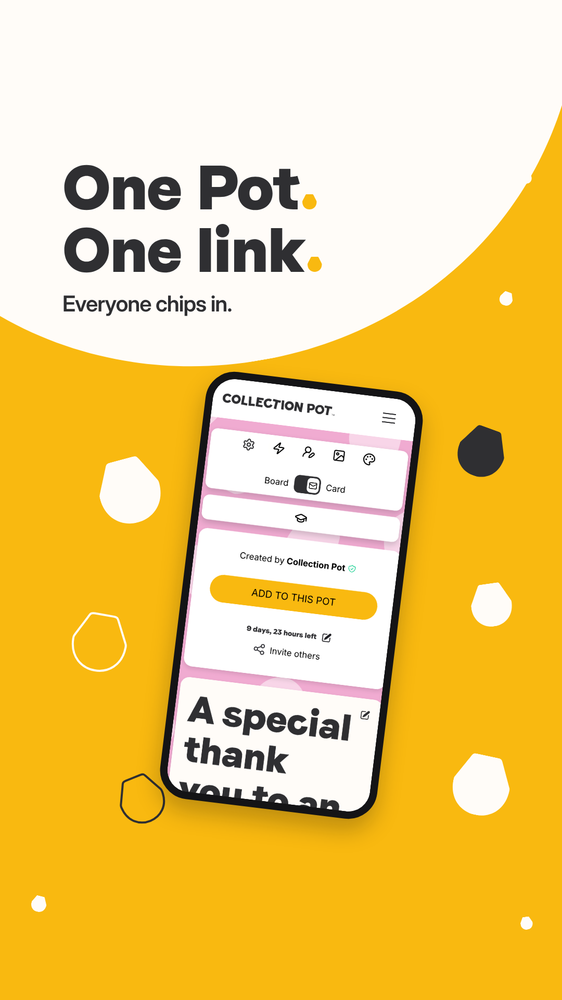
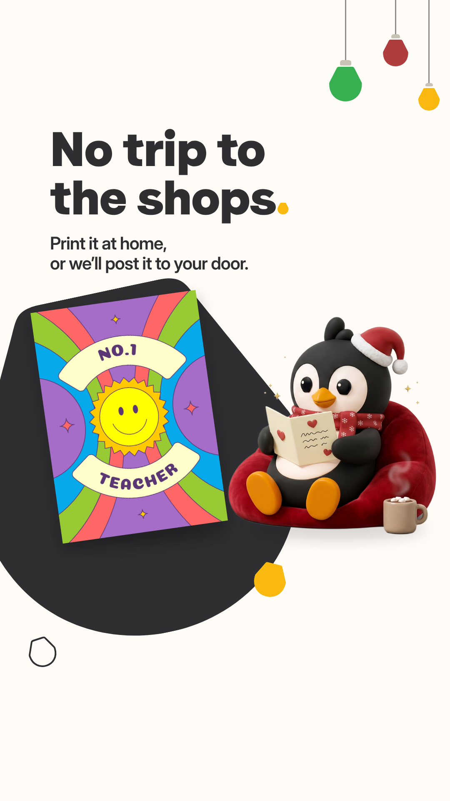
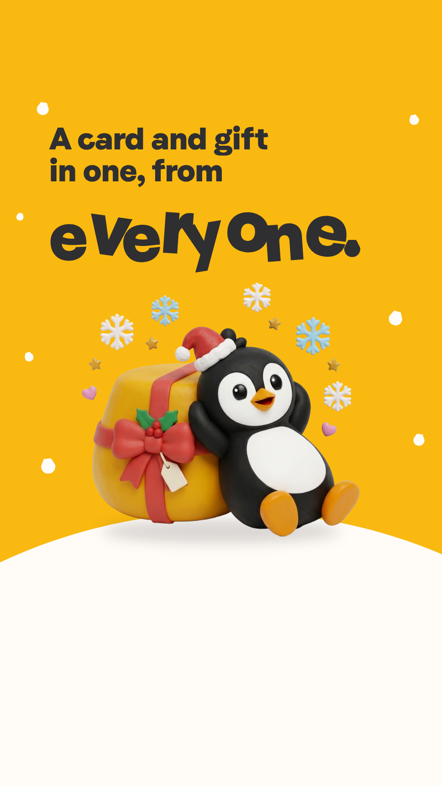
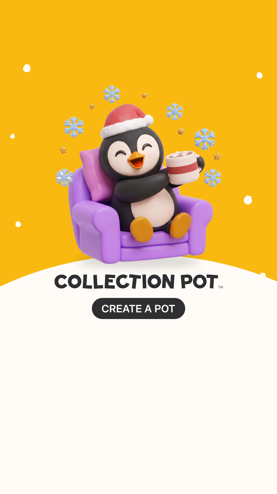

<title>Last day of term storyboard</title>
<meta name="claude:viewport-fit-sides" content="cover">
<link rel="preconnect" href="https://fonts.googleapis.com">
<link href="https://fonts.googleapis.com/css2?family=Inter:wght@400;600&display=swap" rel="stylesheet">
<style>
/* VOICE work: a client review board in the brand's own clothes
   IDEA a printed storyboard sheet, Collection Pot colours
   PICTURE the strip of nine phone-shaped stills, then each still large beside its script
   COLOUR Wedding White ground, Work Bash Black ink, a Pot of Gold band
   TYPE Faro Display Lucky + Inter
   LAYOUT gold band: title and facts left, strip of stills below; frames two per row on a laptop, one on a phone */
@font-face{font-family:"Faro Display Lucky";src:url("fonts/Faro-DisplayLucky.otf") format("opentype"),url("../assets/fonts/Faro-DisplayLucky.otf") format("opentype");font-display:swap}
:root{color-scheme:light dark;--bg:light-dark(#fffcf8,#1b1b1e);--ink:light-dark(#2f2f32,#fffcf8);--soft:light-dark(#5d5d63,#c9c6c0);--card:light-dark(#ffffff,#26262a);--line:light-dark(#e7e1d6,#3a3a40);--gold:#f9b910;--black:#2f2f32;--white:#fffcf8}
:root[data-theme=light]{color-scheme:light}
:root[data-theme=dark]{color-scheme:dark}
*{box-sizing:border-box;min-width:0}
body{background:var(--bg);color:var(--ink);font:16px/1.55 Inter,system-ui,sans-serif;letter-spacing:-.01em;overflow-x:clip;margin:0}
.band{padding-block:clamp(28px,4vw,56px);padding-left:max(5vw,16px,env(safe-area-inset-left,0px));padding-right:max(5vw,16px,env(safe-area-inset-right,0px))}
.wrap{max-width:1240px;margin-inline:auto}
.hero{background:var(--gold);color:var(--black);margin-top:calc(-1*env(safe-area-inset-top,0px));padding-top:calc(env(safe-area-inset-top,0px) + clamp(28px,4vw,56px))}
.hero-top{display:grid;grid-template-columns:minmax(0,1.2fr) minmax(0,1fr);gap:24px 48px;align-items:end}
h1,h2,h3{font-family:"Faro Display Lucky",Inter,sans-serif;font-weight:400;line-height:1.02;letter-spacing:-.01em;margin:0}
h1{font-size:clamp(40px,6vw,72px)}
h2{font-size:clamp(28px,3.4vw,40px);margin-bottom:6px}
.lede{font-size:18px;line-height:1.45;margin:14px 0 0;max-width:34em}
.facts{display:grid;grid-template-columns:max-content minmax(0,1fr);gap:6px 18px;margin:0;font-size:15px}
.facts dt{font-weight:600}
.facts dd{margin:0}
.status{display:inline-block;margin-top:18px;background:var(--black);color:var(--white);border-radius:999px;padding:10px 18px;font-weight:600;font-size:14px;letter-spacing:.025em;text-transform:uppercase}
.strip-scroll{overflow-x:auto;margin-top:32px;padding-bottom:6px}
.strip{display:grid;grid-template-columns:repeat(9,minmax(96px,1fr));gap:12px;min-width:960px}
.strip a{color:inherit;text-decoration:none;font-size:13px;font-weight:600}
.strip img{display:block;width:100%;aspect-ratio:9/16;object-fit:cover;border-radius:12px;border:3px solid var(--black);background:var(--black)}
.strip span{display:block;margin-top:6px;white-space:nowrap}
.act{font-family:"Faro Display Lucky",Inter,sans-serif;font-size:clamp(26px,3vw,34px);line-height:1.05;margin:40px 0 18px;padding-top:18px;border-top:2px solid var(--ink)}
.act:first-child{margin-top:0}
.act small{display:block;font-family:Inter,sans-serif;font-size:15px;color:var(--soft);margin-top:6px}
.frames{display:grid;grid-template-columns:repeat(2,minmax(0,1fr));gap:20px}
.frame{display:grid;grid-template-columns:minmax(0,200px) minmax(0,1fr);gap:20px;background:var(--card);border:1px solid var(--line);border-radius:22px;padding:18px;scroll-margin-top:16px}
.frame img{width:100%;aspect-ratio:9/16;object-fit:cover;border-radius:14px;display:block;border:1px solid var(--line)}
.frame .title{font-family:"Faro Display Lucky",Inter,sans-serif;font-size:26px;line-height:1.05}
.frame .time{font-weight:600;font-size:14px;color:var(--soft);margin-top:4px;font-variant-numeric:tabular-nums}
.frame dl{margin:14px 0 0;display:grid;gap:10px}
.frame dt{font-weight:600;font-size:13px;color:var(--soft)}
.frame dd{margin:2px 0 0;font-size:15px;line-height:1.45}
.frame .words{margin:0;font-size:15px;line-height:1.45}
.ost{font-weight:600}
.tag{display:inline-block;font-size:12px;font-weight:600;letter-spacing:.025em;text-transform:uppercase;border-radius:999px;padding:3px 10px;margin-right:6px;background:var(--gold);color:var(--black)}
.tag.dark{background:var(--black);color:var(--white)}
.plates{display:grid;grid-template-columns:repeat(2,minmax(0,1fr));gap:20px}
.plate{background:var(--card);border:1px solid var(--line);border-radius:22px;padding:22px}
.plate h3{font-size:24px}
.plate p{margin:10px 0 0;font-size:15px}
.prompt{margin-top:12px;background:light-dark(#f6f1e7,#1f1f23);border-radius:14px;padding:14px 16px;font-size:14px;line-height:1.5}
.notes{display:grid;grid-template-columns:repeat(2,minmax(0,1fr));gap:20px 48px}
.notes ul{margin:8px 0 0;padding-left:20px}
.notes li{margin-bottom:6px}
footer{font-size:13px;color:var(--soft)}
@media(max-width:1000px){.frames,.plates{grid-template-columns:minmax(0,1fr)}.frame{grid-template-columns:minmax(0,220px) minmax(0,1fr)}}
@media(max-width:760px){.hero-top,.notes{grid-template-columns:minmax(0,1fr)}}
@media(max-width:520px){.frame{grid-template-columns:minmax(0,1fr)}.frame img{width:62%;margin-inline:auto}}
</style>

<header class="band hero">
  <div class="wrap">
    <div class="hero-top">
      <div>
        <h1>Last day of term</h1>
        <p class="lede">It’s 3:31pm on the last day of term. A phone lights up on the teacher’s desk, and every family’s message pours out of it. Then Chip shows how simple it was: one Pot, with the gift inside.</p>
        <span class="status">Storyboard v2 · waiting for your go</span>
      </div>
      <dl class="facts">
        <dt>Format</dt><dd>Instagram Reel · 1080×1920 · 30 fps · 29.5 s</dd>
        <dt>Territory</dt><dd>2. Gifting is better when done together</dd>
        <dt>VO</dt><dd>None (Reels autoplay muted)</dd>
        <dt>Sound</dt><dd>Felt piano and glockenspiel bed, a few sound effects</dd>
        <dt>Made with</dt><dd>Higgsfield (2 live-action plates, no faces) + HyperFrames</dd>
        <dt>Source</dt><dd>“Teacher gifts made effortless” emailer</dd>
      </dl>
    </div>
    <div class="strip-scroll">
      <nav class="strip" aria-label="All frames">
        <a href="#f1"><span>01 · 0–2.5s</span></a>
        <a href="#f2"><span>02 · 2.5–5.5s</span></a>
        <a href="#f3"><span>03 · 5.5–10s</span></a>
        <a href="#f4"><span>04 · 10–12.5s</span></a>
        <a href="#f5"><span>05 · 12.5–17s</span></a>
        <a href="#f6"><span>06 · 17–20s</span></a>
        <a href="#f7"><span>07 · 20–24s</span></a>
        <a href="#f8"><span>08 · 24–27s</span></a>
        <a href="#f9"><span>09 · 27–29.5s</span></a>
      </nav>
    </div>
  </div>
</header>

<main class="band">
  <div class="wrap">
    <section class="act">Act 1: The teacher’s moment<small>Live action from Higgsfield. Frames 1–4 show sketches where the plates will go; the type (with Pot full stops), phone screen and message pills are final.</small></section>
    <div class="frames">
      <div class="frame" id="f1">
        
        <div>
          <div class="title">01: Last day of term</div>
          <div class="time">0.0 to 2.5s</div>
          <dl>
            <div><dt>What happens on the screen</dt><dd class="words"><span class="tag">Higgsfield 1</span>An empty classroom after the last bell: chairs up, paper chains, low winter sun. A slow push towards the teacher’s desk, where a phone lights up.</dd></div>
            <div><dt>VO</dt><dd>None</dd></div>
            <div><dt>On screen text</dt><dd class="ost">Last day of term. · 3:31PM</dd></div>
            <div><dt>Sound</dt><dd>Room tone, a distant school bell, a phone buzz</dd></div>
          </dl>
        </div>
      </div>
      <div class="frame" id="f2">
        
        <div>
          <div class="title">02: From the whole class</div>
          <div class="time">2.5 to 5.5s</div>
          <dl>
            <div><dt>What happens on the screen</dt><dd class="words"><span class="tag">Higgsfield 2</span>The desk from above. Two hands (no face) come in and rest either side of the phone, which shows the real Teacher Pot.</dd></div>
            <div><dt>VO</dt><dd>None</dd></div>
            <div><dt>On screen text</dt><dd class="ost">From the whole class.</dd></div>
            <div><dt>Sound</dt><dd>Hands on wood; a felt-piano bed begins</dd></div>
          </dl>
        </div>
      </div>
      <div class="frame" id="f3">
        
        <div>
          <div class="title">03: Every name, every message</div>
          <div class="time">5.5 to 10.0s</div>
          <dl>
            <div><dt>What happens on the screen</dt><dd class="words"><span class="tag">Higgsfield 2</span>The desk softens out of focus. Festive pastel message pills, like the card in the emailer, rise out of the phone one every 0.8s.</dd></div>
            <div><dt>VO</dt><dd>None</dd></div>
            <div><dt>On screen text</dt><dd class="ost">Every name. Every message. · “Thank you for everything…” (Aisha) · “Best teacher ever!” (Leo) · “Thank you for being such an inspiring teacher.” (Daniel) · “Merry Christmas!” (Maya) · “Have a lovely break!” (Sofia)</dd></div>
            <div><dt>Sound</dt><dd>A soft pop per card; a glockenspiel joins</dd></div>
          </dl>
        </div>
      </div>
      <div class="frame" id="f4">
        
        <div>
          <div class="title">04: Pot delivered</div>
          <div class="time">10.0 to 12.5s</div>
          <dl>
            <div><dt>What happens on the screen</dt><dd class="words"><span class="tag">Higgsfield 2</span>Same take, back in focus. The hands come together and clasp beside the phone.</dd></div>
            <div><dt>VO</dt><dd>None</dd></div>
            <div><dt>On screen text</dt><dd class="ost">Pot delivered. Cue the <em>happy tears</em> (expressive)</dd></div>
            <div><dt>Sound</dt><dd>The bed lifts; a hard cut on the downbeat</dd></div>
          </dl>
        </div>
      </div>
    </div>

    <section class="act">Act 2: How it was made<small>Chip’s world: Wedding White, Gold and a touch of Black, split by crops of the real Pot shape; Pot baubles and Pot snow; Chip in his Santa hat.</small></section>
    <div class="frames">
      <div class="frame" id="f5">
        
        <div>
          <div class="title">05: The gift’s sorted too</div>
          <div class="time">12.5 to 17.0s</div>
          <dl>
            <div><dt>What happens on the screen</dt><dd class="words"><span class="tag dark">Chip 143</span>A hard cut to White with a Gold Pot crop rising from the bottom and Pot baubles hanging from the top. Chip, in his Santa hat and dreaming of presents, pops in; the NEW: GIFT CARDS sticker slaps on.</dd></div>
            <div><dt>VO</dt><dd>None</dd></div>
            <div><dt>On screen text</dt><dd class="ost">NEW: GIFT CARDS · Now the gift’s <em>sorted too</em> (expressive) · A shop they love, or a multi-store card.</dd></div>
            <div><dt>Sound</dt><dd>The full bed, a pop on Chip, a sticker slap</dd></div>
          </dl>
        </div>
      </div>
      <div class="frame" id="f6">
        
        <div>
          <div class="title">06: One Pot, one link</div>
          <div class="time">17.0 to 20.0s</div>
          <dl>
            <div><dt>What happens on the screen</dt><dd class="words">Gold with a White Pot crop from the top. The real Teacher Pot, ADD TO THIS POT button and all, on a phone, with Pot shapes flying in from every side as everyone chips in.</dd></div>
            <div><dt>VO</dt><dd>None</dd></div>
            <div><dt>On screen text</dt><dd class="ost">One Pot. One link. · Everyone chips in.</dd></div>
            <div><dt>Sound</dt><dd>A soft pop as each Pot lands</dd></div>
          </dl>
        </div>
      </div>
      <div class="frame" id="f7">
        
        <div>
          <div class="title">07: No trip to the shops</div>
          <div class="time">20.0 to 24.0s</div>
          <dl>
            <div><dt>What happens on the screen</dt><dd class="words"><span class="tag dark">Chip 141</span>White with Pot baubles. The real printed No.1 Teacher card drops onto a Black Pot shape; beside it, Chip in his Santa hat reads a card on his beanbag.</dd></div>
            <div><dt>VO</dt><dd>None</dd></div>
            <div><dt>On screen text</dt><dd class="ost">No trip to the shops. · Print it at home, or we’ll post it to your door.</dd></div>
            <div><dt>Sound</dt><dd>A paper slap on landing</dd></div>
          </dl>
        </div>
      </div>
    </div>

    <section class="act">Act 3: Sign-off<small>Gold with Pot snow and a White Pot turned over as a snowy hill. The claim, then the mark, clear of Instagram’s caption and buttons.</small></section>
    <div class="frames">
      <div class="frame" id="f8">
        
        <div>
          <div class="title">08: A card and gift in one</div>
          <div class="time">24.0 to 27.0s</div>
          <dl>
            <div><dt>What happens on the screen</dt><dd class="words"><span class="tag dark">Chip 2</span>Chip, in his Santa hat, leans on a big gift on the snowy hill.</dd></div>
            <div><dt>VO</dt><dd>None</dd></div>
            <div><dt>On screen text</dt><dd class="ost">A card and gift in one, from <em>everyone</em> (expressive)</dd></div>
            <div><dt>Sound</dt><dd>The riser starts</dd></div>
          </dl>
        </div>
      </div>
      <div class="frame" id="f9">
        
        <div>
          <div class="title">09: The mark</div>
          <div class="time">27.0 to 29.5s</div>
          <dl>
            <div><dt>What happens on the screen</dt><dd class="words"><span class="tag dark">Chip 107</span>The headline clears and the hill rises. Chip raises a hot cocoa with a wink (his sign-off). The Pot pops into the logo’s “O” (the brand’s own logo move), then CREATE A POT lands.</dd></div>
            <div><dt>VO</dt><dd>None</dd></div>
            <div><dt>On screen text</dt><dd class="ost">Collection Pot logo · CREATE A POT</dd></div>
            <div><dt>Sound</dt><dd>A soft hit on the logo; the bed resolves</dd></div>
          </dl>
        </div>
      </div>
    </div>
  </div>
</main>

<section class="band" style="background:light-dark(#f6f1e7,#202024)">
  <div class="wrap">
    <h2>Higgsfield plates</h2>
    <p style="margin:0 0 18px;color:var(--soft)">Settings for both: Cinema Studio Video 3.0 · 9:16 · 1080p · genre drama · audio off. No faces, no text, no logos, no mascots.</p>
    <div class="plates">
      <div class="plate">
        <h3>Plate 1 · Classroom push-in</h3>
        <p>5 s, used for 0–2.5s. Generate 2–3 takes.</p>
        <div class="prompt">Empty UK primary school classroom at 3:30pm on the last day of term before Christmas. No people anywhere. Chairs are stacked upside down on the pupils’ desks. Handmade paper chains in red, green and gold hang across the ceiling. Low winter sun streams in through a window on the left, making long warm shadows and catching dust in the air; the rest of the room is dim and quiet. A string of warm fairy lights glows on the teacher’s desk at the back of the room. A smartphone lies face up on the teacher’s desk, and its screen lights up softly about one second in. Slow, steady dolly push forward between the desks towards the teacher’s desk. 35mm lens, shallow depth of field, natural colour, gentle film grain, realistic. Keep the top third of the frame calm and plain (shadowed wall and ceiling) to leave room for titles.</div>
      </div>
      <div class="plate">
        <h3>Plate 2 · Desk from above</h3>
        <p>12 s, one locked-off take, used for 2.5–12.5s. The phone must not move.</p>
        <div class="prompt">Locked-off overhead shot looking straight down at a wooden teacher’s desk on the last day of term before Christmas. Warm late-afternoon winter light from the left, soft natural shadows. On the desk: a few school worksheets, a red pen, a white mug of tea, a tiny potted Christmas tree and a loop of colourful paper chain. A smartphone lies face up in the centre of the frame, slightly below centre, with a plain bright green screen; the phone never moves. At about one second, two hands in the sleeves of a cosy knitted jumper slide in from the bottom of the frame and rest flat on the desk on either side of the phone, not touching it. They stay still, and the fingers give one small happy tap. Around eight seconds in, the hands come together and clasp just below the phone, a quiet moment of joy. Only hands and forearms are ever in frame, never a face or head. Camera completely still. Keep the top third of the frame as plain wooden desk to leave room for titles. Realistic skin, five fingers on each hand, natural colour, shallow depth of field.</div>
      </div>
    </div>
  </div>
</section>

<section class="band">
  <div class="wrap notes">
    <div>
      <h2>New in v2</h2>
      <ul>
        <li>Less yellow: every Gold frame now mixes White, Gold and a touch of Black, split by big crops of the real Pot shape (taken from the brand’s own Pot file, never redrawn).</li>
        <li>Festive: Chip in his Santa hat throughout, Pot-shaped baubles, Pot “snow”, and an upside-down Pot as a snowy hill.</li>
        <li>Playful type: Pot full stops, and expressive bouncing letters on <em>happy tears</em>, <em>sorted too</em> and <em>everyone</em>.</li>
        <li>Frame 6 now shows the real Teacher Pot on a phone with Pots flying in, instead of a non-festive Chip.</li>
        <li>Frame 3’s messages are pastel pills like the emailer’s card, adding “Best teacher ever!”, “Merry Christmas!” and “Have a lovely break!”.</li>
      </ul>
      <h2 style="margin-top:28px">Copy changes since the script</h2>
      <ul>
        <li>2.5s: “One Pot. From the whole class.” is now “From the whole class.”, so “One Pot” isn’t said twice.</li>
        <li>12.5s: the Gift Card line moved onto the NEW sticker, and the headline is now “Now the gift’s sorted too.”</li>
        <li>17s: “Everyone chips in.” is now a subline under “One Pot. One link.”</li>
        <li>24s: the end card is now two beats (the claim, then the logo and CREATE A POT), so both sit clear of Instagram’s caption and buttons.</li>
      </ul>
    </div>
    <div>
      <h2>To approve</h2>
      <ul>
        <li>The frames, timings and words above.</li>
        <li>The two Higgsfield prompts. Once they’re generated, I build the film.</li>
        <li>Music: tell me if you have a licensed track; otherwise I’ll find a festive, warm bed to match.</li>
      </ul>
    </div>
  </div>
</section>

<footer class="band"><div class="wrap">Brand assets are used as supplied: Chip renders 143, 141, 2 and 107; the Pot shape (potYellow.svg, recoloured); the linear black logo; the No.1 Teacher printed card; and captures of the live Teacher demo Pot. Sketched backgrounds in frames 1–4 are placeholders for the Higgsfield plates.</div></footer>
